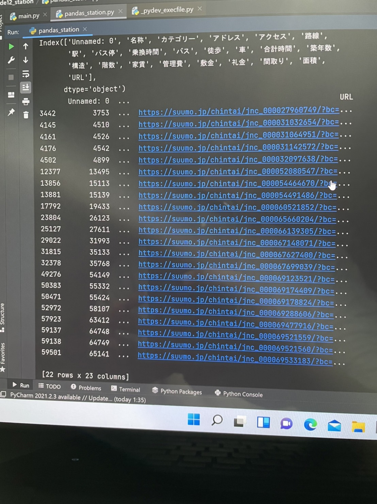
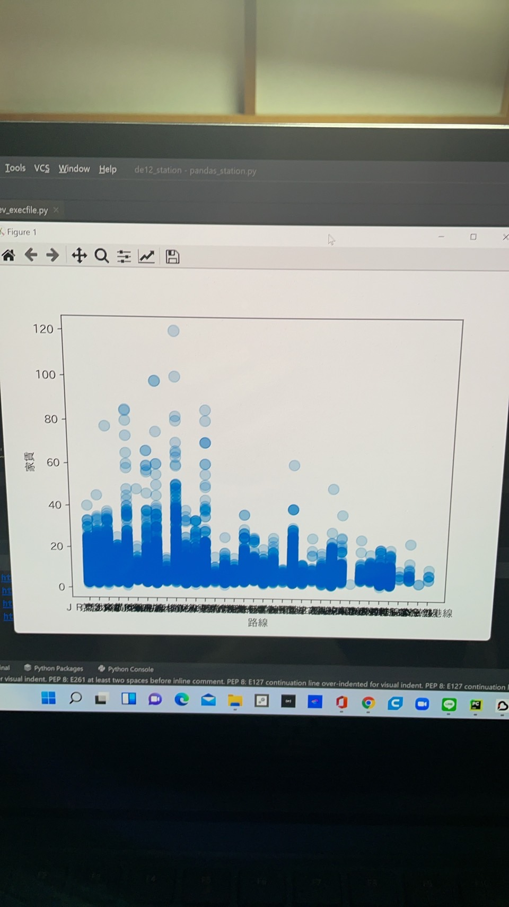

第七回
・コード
- import pandas as pd # データ分析に用いるライブラリ
- import matplotlib.pyplot as plt # グラフ表示に用いるライブラリ
- pd.set_option('display.unicode.east_asian_width', True) # 表示のずれを少し緩和
- plt.rcParams['font.family'] = 'IPAexGothic' # グラフ表示におけるフォントの指定
- data_path = "./data.csv"
- df_data = pd.read_csv(data_path, encoding="utf-8-sig")
- print(df_data.columns)
- #簡単な統計
- #print(df_data.describe())
- #時間ごとの数
- #print(df_data["合計時間"].value_counts(sort=False))
- #print(df_data.groupby("駅").mean())
- #print(df_data.loc[:, "路線"].unique())
- #print(df_data.groupby("").mean())
- #京急本線の三十分以内で着く乗り換えが十分未満の駅が二十二件
- mask = (df_data["路線"] == "京急本線") & (df_data["合計時間"] < 30) & (df_data["乗換時間"] < 10)
- print(df_data[mask])
- x = df_data.loc[:, "路線"]
- y = df_data.loc[:, "家賃"]
- plt.scatter(x, y, s=100, alpha=0.2)
- plt.xlabel("路線")
- plt.ylabel("家賃")
- plt.show()
- #print(df_data.loc[:, ["駅"].unipue())
内容
・やりたかったこととしては、京急本線で合計時間が三十分未満、かつ乗り換え時間が十分未満になる物件を紹介したかった。
・今の段階では京急本線で上の条件を満たす物件をピックアップするところまでできた。
＜課題＞
・京急線のデータにある駅をリスト化すること。
・物件名を表示すること
・検索した二十二件の合計時間と家賃の相対的なグラフを作ること

・二十二件の検索結果を得るところまではできた。

・グラフを表示させることはできたけど、文字が重なってて読めない
感想
・まだどのコードを使えばいいのかよく理解できていないので、
どのコードが機能して、どのコードがダメなのかがよくわからなかった。
・道用先生のように、どんどん条件を絞っていけるようなやり方をしたかったけど、実力に見合ってなかった。
・いったん今ある壁を乗り越えられるようにしたい。
参考にしたサイト
データの分析
データの可視化